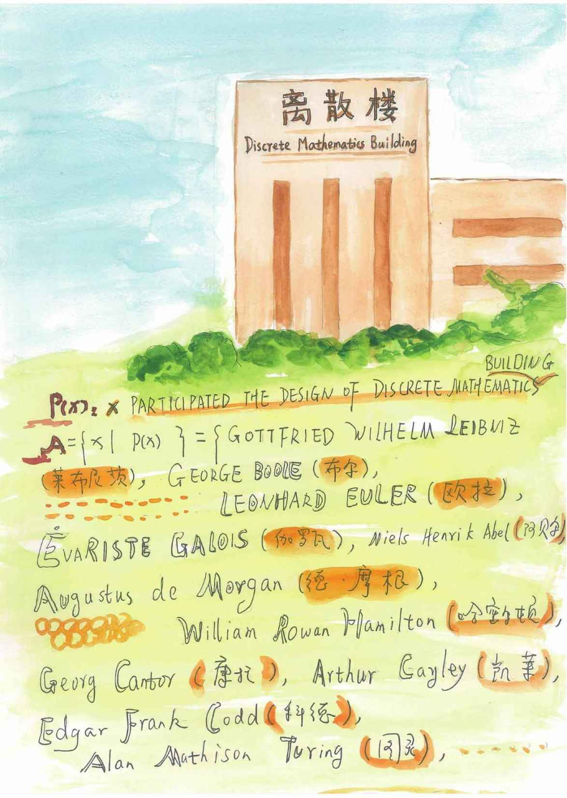

引子
这天，小文回到家，家里除了小猫丽仔没别人。小文在橱柜里翻出零食，一边吃，一边在房间里转悠，丽仔“喵呜”“喵呜”地跟在后头，提醒主人它饿了。
小文最近比较闲，实际上她已经闲了快一个月了。
小文是一个准大学生，刚刚收到一所大学的录取通知书，再过一个多月将到另一个城市去读大学。
时间过得很快，高中三年一直期待的那个“三个月”漫长的假期转眼已经过半，作为一个曾经的高三党梦想的那些，比如旅行、电影、电玩、KTV、啃小说……这些事轮番干过几遍之后也不觉得兴奋了。
那就尝试下勤工俭学吧，她最近在辅导一个初中生的数理化，这活并不轻松，她的学生——一个十四岁的小男孩，总是一副没睡醒的样子，上课时老心不在焉，手里不停地转动他的那支中性笔。
想想这家教的活还得干到八月末，她心里竟然有点希望暑假能早点结束。
不知自己的“大学”会是什么样子呢？她从记事起就在妈妈工作的这所大学里打转转，在这里读的幼儿园、小学、初中，现在小文很高兴能离开这个待了这么久的地方，但是想想未来的大学生活，心里有点不踏实。
一天，她拐弯抹角地跟妈妈说了自己的想法，大致的意思是想让妈妈教她一点大学的课程。
“行啊！”妈妈答应得倒是很爽快，“这可是你自己提出来的哦，可不要半途而废啊！”
这不，电脑提示收到新邮件了，是妈妈发过来的。邮件标题是“离散数学第一课”。
噢，看来课程要开始了！
对于“离散数学”这四个字，她并不陌生，家中书柜里这类书不少，有时书桌上、茶几上到处放着……因为妈妈在学校里上这门课，她要备课。
看来妈妈是打算卖现成的了。
嗨，小文，那我们就开始了哟。
我们从小就学习数学，从0，1，2，3，4…这样的自然数开始，学习加、减、乘、除，慢慢地，我们知道了什么是整数、分数、有理数、无理数……做了若干的题，有人可能会告诉你，这是“代数”，那是“几何”，它们一般被称为“初等数学”。
接下来，你将去读大学，你面前会出现一些更宏伟的数学大厦。
其中一座，是赫赫有名的“微积分”，入口的铭牌上介绍：修建这座大厦的两位主设计师是牛顿和莱布尼茨。
旁边还有一座大厦，上面写着“离散楼”三个大字，看起来，好像没有“微积分”有名气，那这栋大厦里面有什么呢？
入口的简介上写道：离散数学是数学大家庭的一员，它研究的是一些离散的对象，离散数学这座大厦没有一致公认的主设计师，它的修建更能体现“集体创作”的精神……
具体有哪些离散对象，小文，你就接着往下看吧……
看到这里，小文想，什么是离散数学自己还是不太明白，不过，一直听妈妈说离散数学和计算机关系蛮大的。要说离散的对象，我们班那帮人倒很像离散对象，特别是最近，一下子不用上学了，大家每天在家宅着或在外闲逛，听说有几个还逛到了日本和美国，真是够离散的。
小文继续往下看去……

在众多的数学大厦中，你会看到这样一座……